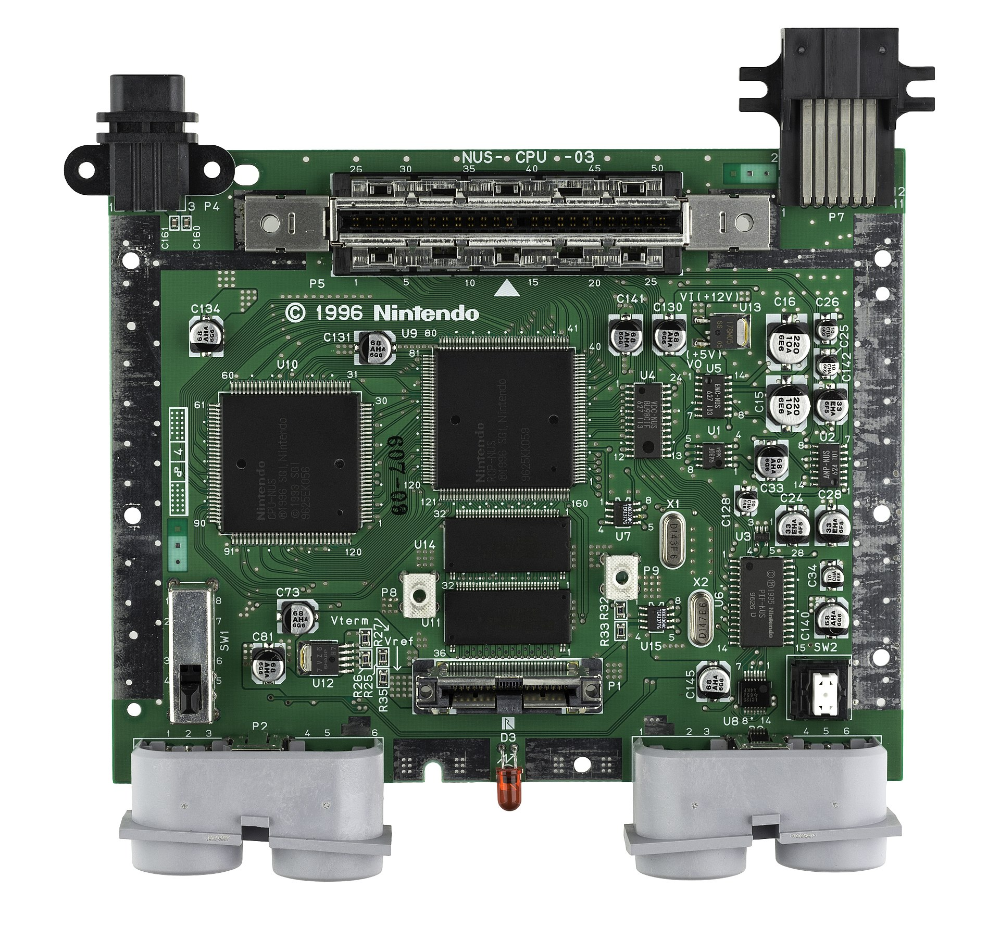
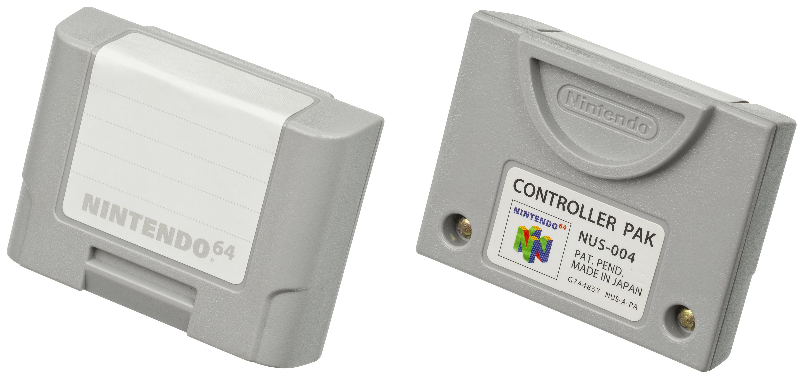
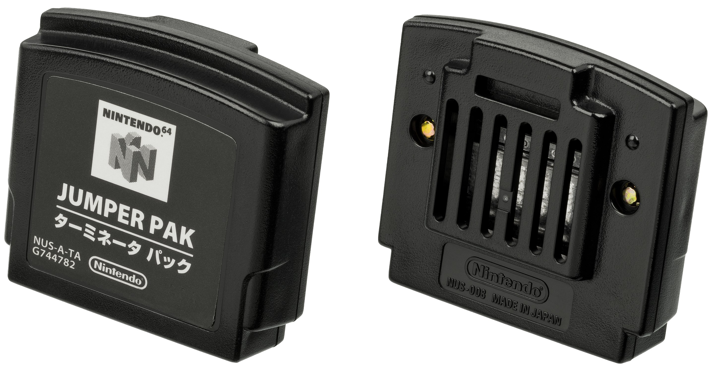
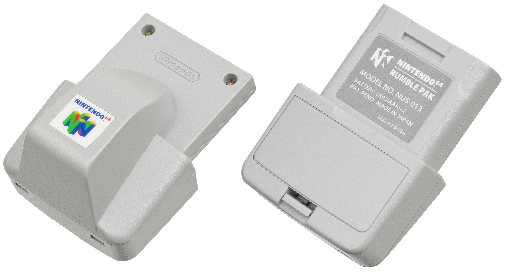
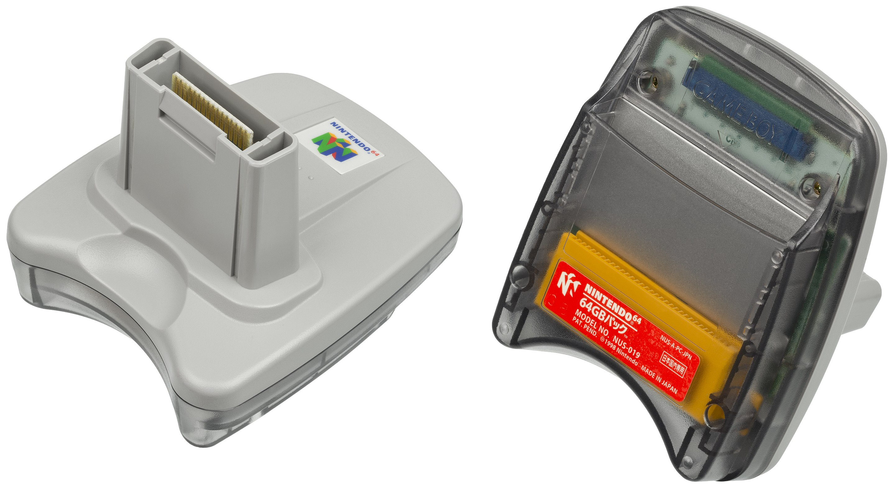

Introduction
The Nintendo 64 is a home game console developed and marketed by Nintendo.
It was first released in Japan in June 1996, in America in September 1996 and in Europe
and Australia in March 1997. Its production lasted until 2002, when it was substituted by the GameCube.
Characteristics
The standard Nintendo 64 is black (although consoles of different colors were released later) with rounded edges and a slot on the upper part for game insertion. The games playable on this console come on ROM cartridges: this was made by the company in order to prevent piracy and hacking on their games.
The downsides of this feature are the very limited memory if compared to a CD and the impossibility of reselling old games at a lower price because of the expensiveness of cartridge production. The cartridges are usually gray, however black cartridges have been made for some games.

Its controller (called NUS-005) is m-shaped with the following characteristics: 10 buttons (A, B and four directional C buttons on the right side, L and R in the front, Z under the central ''leg'' of the shape, and Start in the very centre),
an analog stick in the center, a digital directional pad on the left, and an extension port on the back for many of the system's accessories. It was initially available in the seven colors of gray, yellow, green, red, blue, purple, and black, and later translucent versions were released, with the exception of the color gray.

Technical aspects
Its CPU, the NEC VR4300, is a licensed variation of the 64-bit R4300i, a 64-bit processor produced by the MIPS Technologies, Inc. The use of a 64-bit processor gave the Nintendo 64 a power similar to the Pentium processor, although the software rarely used it at its maximum and its bus system was smaller (32-bit). Regarding memory, the Nintendo 64 is one of the first modern consoles to implement a unified memory instead of a system of separate banks of memory for the different elements (CPU, audio, video, etc).
The memory itself is a 4 megabytes Rambus RDRAM, which was quite new at the time but gave Nintendo a way to have a great amount of bandwidth for a low price.
Audio can be processed by either the Reality Coprocessor or the CPU with a 48.0 kHz rate. Video is output in composite video and S-Video formats, and the cables are the same that the preceding SNES and succeeding GameCube platforms used.
The Nintendo 64 can display 16.8 million colors and resolutions from 320×240 up to 640×480 pixels. Most games use the lower resolution, and several of those who use the higher ones need the Expansion Pak to work correctly. The display ratio supported bu the vast majority of the games is 16:9.
An important detail to mention is that the Nintendo 64 is one of the first gaming consoles to have four controller ports: this feature was introduced because the company believed Nintendo 64 was the first console of theirs which could handle a four player split screen without significant slowdowns.

Optional components
The console also has several optional components. The most important ones, called Paks, are:
- Controller Pak: this accessory is a memory of originally 256kB that must be plugged under the pad, divided into 123 "pages". Later Nintendo, realizing the memory had too small a size, decided to create other versions from 1 to 4 MB in size.

- Expansion Pak: it consists of a 4 MB bank of RDRAM (Rambus DRAM) that goes alongside the original 4 MB bank in the motherboard, allowing the player to reach 8 MB of RAM for high game definitions and many other improvements. Although it is supported by several games, some of them can work only with the Expansion Pak connected to the console, while others need the Expansion Pak to be able to activate some extra features.

- Jumper Pak: this accessory is a filler that must be plugged into the memory expansion port and has no use other than to substitute for the Expansion Pak, in case the latter was missing, in order to ensure pictures appeared on the screen. Nintendo 64 consoles were shipped with the Jumper Pak already included and installed. The Paks were not sold individually in stores and could only be ordered through Nintendo's online store.

- Rumble Pak: this accessory consists of a motor powered by 2 mini batteries that, when inserted into the gamepad, vibrates during the game, following events generated in the game environment. This accessory is now considered a standard available for all consoles of the latest generations.

- Transfer Pak: it is an accessory that, when inserted into the controller, allows the user to transfer game data between the Nintendo 64 and the Game Boy, and was mainly used to transfer images taken with the Game Boy Camera to the Nintendo 64; later, it was used in the Pokémon Stadium games to pass data from the Game Boy to the Nintendo 64.
Many games support both rumble pak vibration and save to controller pak, so it may happen the player has to plug both alternatively.
